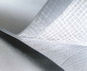

当前位置：
当前位置：
产品概述
热塑性聚烯烃(TPO)防水卷材是以热塑性聚烯烃合成树脂（TPO）为基料，采用先进加工工艺而制成的片状高分子类防水材料。

产品特性
具有很强的耐老化和抗紫外线、臭氧和一般屋顶化学用品的性能。
使用范围广，可替代现有各种防水卷材用于防水工程。
防水效果十分可靠，使用年限长、效果好。
绿色环保，其光亮的表面会反射大部分的阳光，从而减少建筑物的制冷费用。
使用过程中始终保持热风焊接性能，维护方便。使用方便是经济、快捷的覆盖产品。
执行标准
GB27789-2011 热塑性聚烯烃（TPO）防水卷材
| 序号 | 项目 | 指标 | |||||
|---|---|---|---|---|---|---|---|
| H | L | P | |||||
| 1 | 中间胎基上面树脂厚度/mm ≥ | - | 0.4 | ||||
| 2 | 拉伸性能 | 最大拉力（N/cm） ≥ | - | 200 | 250 | ||
| 拉伸强度/MPa ≥ | 12.0 | - | - | ||||
| 最大拉力时伸长率 ≥ | - | - | 15 | ||||
| 断裂伸长率/% ≥ | 500 | 250 | - | ||||
| 3 | 热处理尺寸变化率/% ≤ | 2.0 | 1.0 | 0.5 | |||
| 4 | 低温弯折性/℃ | -40，无裂痕 | |||||
应用领域
应用于轻钢屋面、地下、隧道、地铁、桥梁以及垃圾场、人工湖等防水、防渗工程。